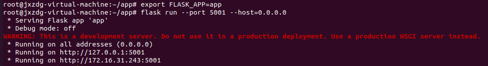
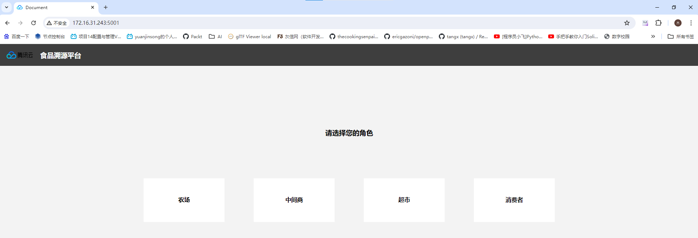

某公司规划开发一个“食品溯源”应用系统，通过区块链技术，实现食品生产、流通、销售等环节的溯源。以蔬菜食品为例，假设蔬菜食品在流转过程中的角色包含农场、中间商、超市、消费者4种，我们期望利用区块链的存证防伪技术，建立与4种角色相关的蔬菜食品溯源应用平台，最终消费者在购买到该蔬菜食品时，通过输入蔬菜食品的溯源码，能够查看到该蔬菜食品的基本信息及其完整流转过程。
1. 登陆linux服务器，检查部署的4节点fisco进程是否有启动，如果未启动，执行命令启动，再次检查。
2. 登陆linux服务器，检查WeBASE-Front进程是否有启动，如果未启动，执行命令启动，再次检查。
3. 查看WeBASE-Front服务默认的5002端口是否正常启动。
说明：服务启动过程预计需要1分钟，请等待服务完全启动后，再执行下面步骤。
4. 在PC端chrome浏览器上访问WeBASE-Front，访问地址格式为http://ip:port/WeBASE-Front。
5. 基于WeBASE-Front平台，创建一个超级用户，用户名称为admin。
6. 在WeBASE-Front，合约管理->合约IDE中新建目录trace，并将指定文件夹下trace路径下的智能合约代码全部导入到WeBASE-Front IDE中新建的trace目录中。
7. 在合约管理->测试用户中，创建三个测试用户，分别对应三个角色，命名为producer，distributor，retailer，供部署合约使用，请将创建好的账号地址复制到一个名为user.txt中待用。
8. 完成Trace合约的保存，编译，部署。
9. 编辑app.py
根据自己部署情况替换以下项：
URL = 'http://IP:5002/WeBASE-Front/trans/handle'
### 填写智能合约的相关信息
CONTRACT_NAME = 'Trace'
CONTRACT_ADDRESS = '*****'
CONTRACT_ABI = '****'
### 填写用户地址信息
PRODUCER_ADDRESS = '****'
DISTRIBUTOR_ADDRESS = '****'
RETAILER_ADDRESS = '****'
10. 启动应用
注意在app.py对应的文件夹下启动
export FLASK_APP=app
\flask run --port 5001 --host=0.0.0.0

运行结果如下：
